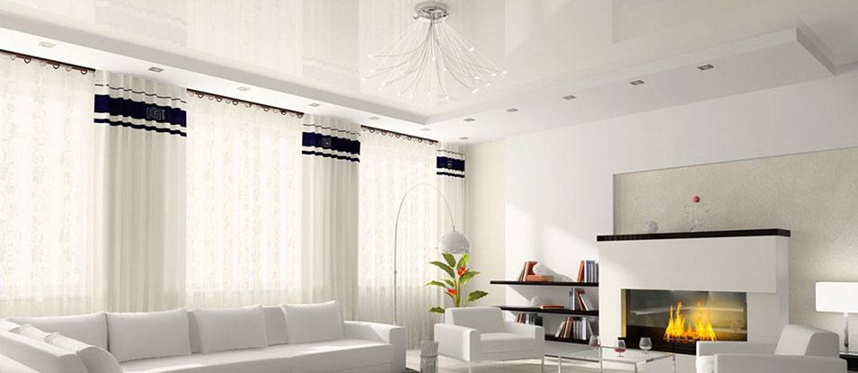
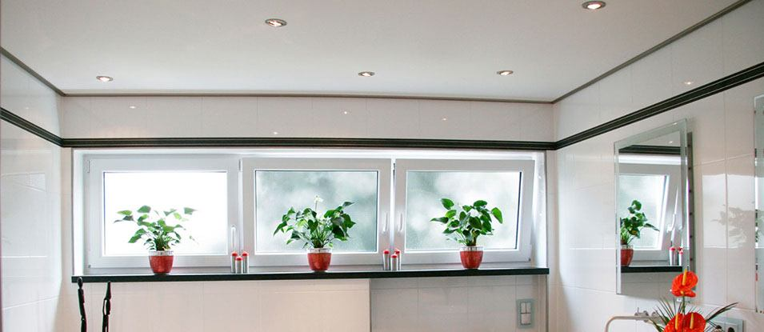

MSD (Китай)
Эти полотна из ПВХ отвечает высоким европейским стандартам качества. Потолки из полотен MSD сочетают в себе отличное качество материала и бюджетные цены позволяет соперничать с лучшими производителями из Европы.
DESCOR (Германия)
Торговая марка Descor принадлежит немецкому производителю Pongs Group. Отличительной чертой тканевых натяжных потолков Descor являются их противопожарные и антистатические свойства.
PONGS (Германия)
Одни из самых узнаваемых брендов в производстве текстиля для натяжных потолков. PONGS - это немецкий подход к качеству, современные инновационные технологии производства и гибкая ценовая политика.
CLIPSO (Швейцария)
Натяжные потолки из Швейцарии Clipso - это потолки премиум класса! С 1997 года компания разрабатывает тканевые натяжные полотна и уникальные системы их крепления без использования нагревательных приборов
Леся Ярославская рекомендует Седьмое Небо!
Установка натяжных потолков любой сложности, быстро и качественно!
Студия натяжных потолков «Седьмое небо» занимается производством, продажей, установкой и сервисным обслуживанием натяжных потолков . Профессионализм наших сотрудников и безупречное качество продукции позволяет нам воплощать самые смелые дизайнерские решения, а за счет производственных мощностей и полного ассортимента предлагаемых нами материалов, сделать это в самые сжатые сроки.
Наши монтажники устанавливают потолки различной сложности уже более 9 лет.
Мы уверенны в качестве наших потолков и предоставляем бессрочную гарантию на полотна.
Вызов замерщика в день обращения.
Полный расчет стоимости до начала работ.
Более 100 различных оттенков и фактур на любой вкус.
Гибкая система расценок, акции, а также бонусы для клиентов по рекомендации.
Полотна из качественных и безопасных материалов от европейских производителей.
Мы используем только полимерно-композитные безопасные газовые баллоны.
только профессионалы
Монтаж производят квалифицированные и опытные сотрудники, используется только современное оборудование! Всем известный факт - для установки натяжных потолков из ПВХ используется взрывоопасное газовое оборудование. Именно поэтому, мы решили отказаться от использования стандартных цельнометаллических газовых баллонов, так как относительно недавно появились полимерно-композитные безопасные газовые баллоны.

- 1 день
Бесплатный вызов замерщика в день обращения
- 2 день
Проектирование, подбор и подготовка материала
- 3 день
Монтаж натяжного потолка в указанный срок и время

Матовые потолки
Классические матовые полотна, которые образуют ровную поверхность, имитирующие побелку
- 
Глянцевые потолки
Не только эффектный элемент интерьера, но и возможность визуально расширить помещение
- 
Сатиновые потолки
Сатиновые натяжные потолки имитируют покраску водоэмульсионной краской

Акция
месяца
Всем именинникам этого месяца скидка 6%
Отзывы наших клиентов

У меня квартира - студия. Мне очень хотелось разбить ее на зоны хотя бы визуально. В интернете увидел, что можно разбить на зоны с помощью натяжных потолков. Позвонил в СЕДЬМОЕ НЕБО объяснил свое желание менеджеру. Ко мне приехал дизайнер, мы долго и бурно (с моей стороны) обсуждали как правильно, красиво а главное функционально сделать. Договорились на дату. Бригада монтажников приехала во время. Сделали все точно как мы с дизайнером обсудили. После себя убрали, что меня особо порадовало (не знал, что входит в их обязанности). Я очень доволен. Посоветовал друзьям.
Роман. vk.comСпасибо ребята за качественные потолки. По стечению обстоятельств глянцевый уже выдержал потоп от соседей и как видите без проблем пережил его и спас обои с ламинатом.
С большой комнатой еще интересней. Потолок не простой геометрии, и сделали его без единого шва! Одним словом СПАСИБО
Александр. vk.com
География наших работ
- Более 10000 довольных клиентов
- Более 20000 м2 установленных потолков в год
- Опыт работы более 9 лет
- Более 3 крупных объектов кап. строительства в месяц